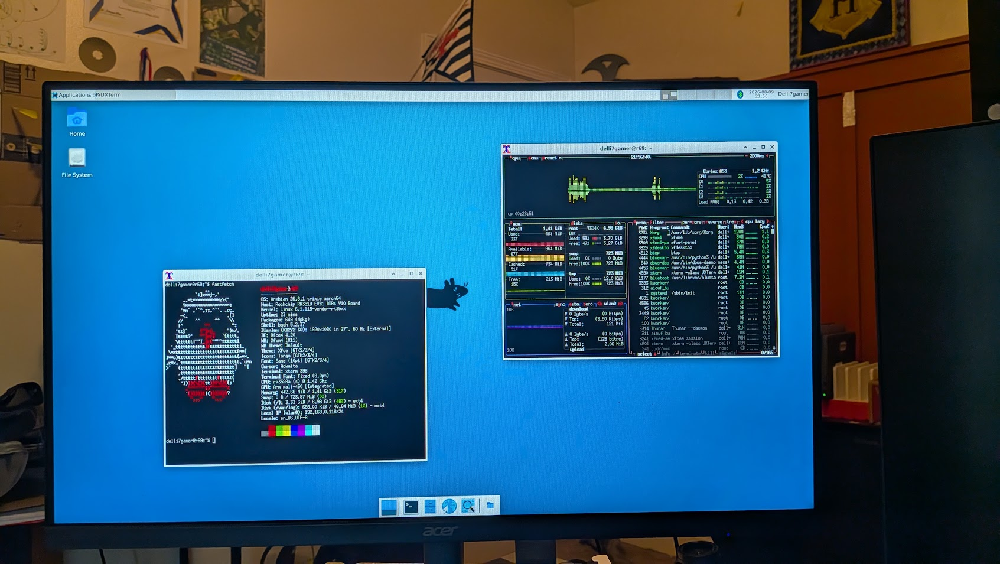
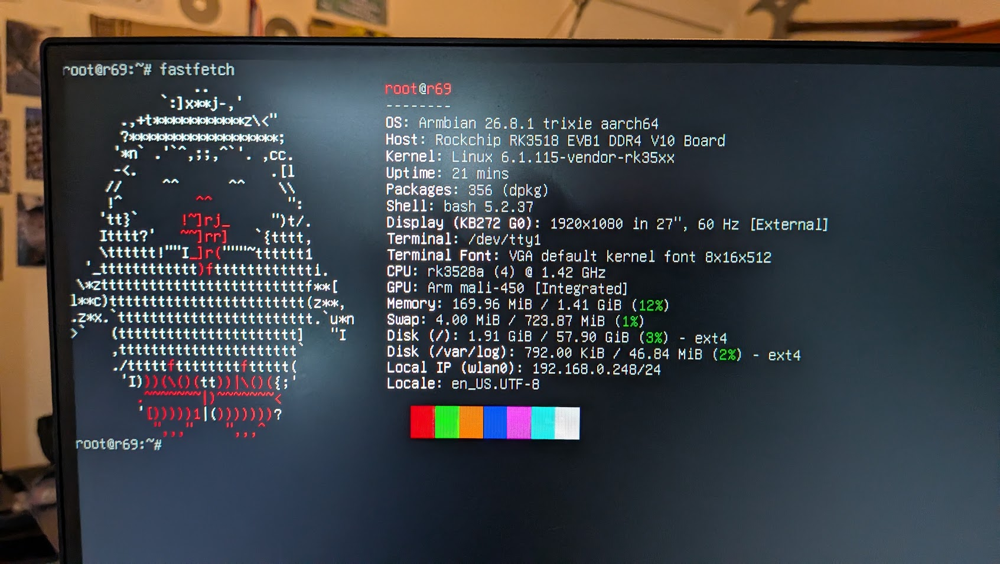

H96MAX/R59/RK3513 Linux
Introduction
Welcome. This guide was made to have a better to read and follow version of current guides out there. You
need to know what
your doing as a wrong move or EMMC write can brick your TV box. I am NOT responsible if you brick, destroy,
or eat your TV
box from this tutorial. I am NOT a professional and this is a hobby project. If you are here for piracy get
lost.

Prerequisites
Needed
- Any TV box based on the RK3513
- WSL, or a linux machine
- A microSD card and reader
- BalenaEtcher
- A backup of your current image
Recommended
- 3.3V TTL to USB adapter
- puTTY
- Soldering Iron
- Willpower
- Usb Hub (if you have only 1 usb port)
First Steps
If you brought a TTL adapter I would start soldering it on now and getting puTTY ready.
You dont "need" a TTL adapter but if you break something you will be locked out
and clueless. This will take an hour or two and will most likely be a pain in the ass.
You need basic linux knowledge and how to navigate a CLI. I am using WSL based off
Debian Trixie.
DTB STUFF
These are the specs of my box, It would be better if yours is the same or similar because device
trees are picky.
- Rockchip RK3513 @1.4GHZ
- 1.5GB (Binned) Samsung LPDDR3
- 8GB Samsung EMMC
- SD SLOT
- AIC8800D80 Wifi
Links you need
I will provide these links for reference, and also for credit to the original devs, I added
every repo and link you will need. Please thank the devs for their work because without them this wouldnt
exist.
Downloading and setting up environment
1. First run, git clone https://github.com/sormy/rk3518-r69-armbian.git
2. CD into that directory and make sure all files are intact.
Compiling
There are multiple board options from the compile script, if you arent sure use r69 as the default.
1. Download the Armbian ROCK 2F image as an img.xz file, it MUST be img.xz
2. Note where the img.xz file is as you will need it for later.
3. You are now ready to compile! Once in the cloned directory run the command:
./build-image.sh path_to_img.xz r69
4. Find out where your new compiled .img file is and you will need to flash that to the microSD card.
Flashing to SD
1. Download and install BalenaEtcher, this could be done with DD but BalenaEtecher is easier.
2. Open BalenaEtcher and select the compiled .img file, then select your microSD card and flash it.
Booting the TV Box
1. Insert the SD card into the TV box and power it on, HDMI might take a while to wake up. First boot also
takes the longest at around 5 minutes due to it compiling drivers.
2. Once booted it will simply ask you for a username and password and thats it! You have booted linux on the TV Box.
Installing to EMMC
1. When booted into the Armbian SD, run the command "sudo armbian-install"
2. After the GUI loads find and select the option "Boot from eMMC" this will install rootFS and all that fancy stuff.
DO NOT power off the box during this process because it will be hardbricked if you didnt back up android. After that it will
ask you to reboot or power off, after that remove the SD card and turn the box back on and boot into Linux!
Ending Notes
This is a basic guide that goes over the steps, do NOT use only this guide and please read through the repos and guides I linked.
This chipset is still new and not very powerful so dont expect a fast or smooth experience. My setup can comfortably run XFCE
and a few terminal based apps but it lags running a neofetch prompt so thats the baseline of the performance.
